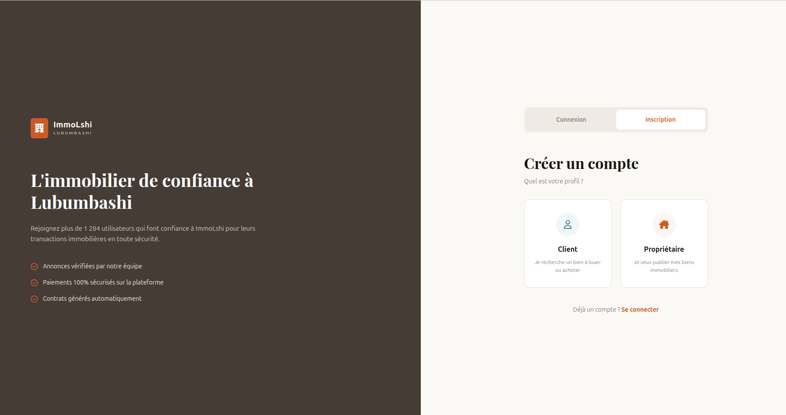

Mes Projets

Projet IMMO L'SHI
Une Plateforme web de publication et de gestion de biens immobiliers.
Plateforme web qui facilite la publication et la recherche de biens immobiliers à Lubumbashi. Les propriétaires créent leur compte et publient leurs biens avec des images et des informations détaillées. Les visiteurs peuvent rechercher et consulter les annonces. Les données sont gérées via une API connectée à une base de données MySQL.
Technologies : Adonis.js ,Tailwind,Js,Html:5,my sql

Projet Clone X
Clone de Twitter développé en full stack pour pratiquer l’authentification, la gestion des publications et les interactions utilisateurs.
Technologies : Adonis.js ,Tailwind,Js,Html:5,my sql

Projet Sunnyside
Création d’une maquette interactive inspirée du design Sunnyside. L’objectif était de reproduire une interface moderne et épurée, tout en mettant en valeur différents outils numériques tels que les ordinateurs, les tablettes et les téléphones portables. Le travail a consisté à intégrer une mise en page flexible et adaptable, grâce à l’utilisation de media queries permettant d’assurer une expérience totalement responsive sur tous les écrans. Cette maquette démontre la capacité à combiner design moderne, structuration cohérente et techniques avancées d’intégration front-end. .
Technologies : HTML5, CSS3, Media Queries,Flexbox

Maquette Netflix
Création d’une maquette interactive inspirée de Netflix à l’aide de Figma. L’objectif était de concevoir une interface moderne tout en assurant une cohérence graphique solide, une hiérarchisation claire des contenus et une expérience utilisateur optimisée (UX/UI). Le travail a porté sur l’organisation des composants, la structuration visuelle, la navigation intuitive et la mise en avant des éléments clés afin d’offrir une maquette fidèle, fluide et ergonomique.
Technologies : Figma, GitHub

Projet Docteur Norman
Site vitrine réalisé en HTML et CSS dans le cadre de ma formation à la Kadea Academy. Ce projet m’a permis de renforcer mes compétences en structuration d’une interface web responsive, d’explorer les bonnes pratiques du design d’interface utilisateur (UI) et d’appliquer les principes fondamentaux d’un layout moderne et cohérent. L’objectif était de concevoir une page claire, élégante et adaptée à tous les supports, tout en respectant les standards du développement front-end. .
Technologies : HTML5, CSS3, GitHub